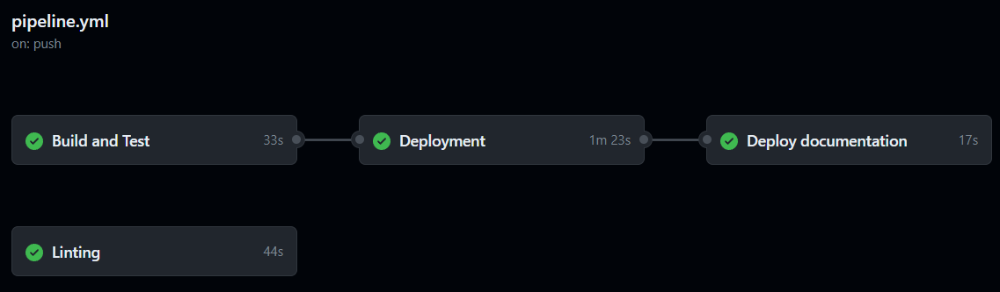

Pipeline¶

The pipeline is a GitHub Actions workflow defined in .github/workflows/pipeline.yml. It runs on every push to main
and on every pull request targeting main.

| Job | Runs on | Pull requests | Push to main |
Depends on |
|---|---|---|---|---|
| Build and Test | ubuntu-latest | yes | yes | — |
| Linting | ubuntu-latest | yes | yes | — |
| Deployment | self-hosted | no | yes | Build and Test |
| Deploy documentation | ubuntu-latest | no | yes | — |
Build and Test¶
Builds the backend with Maven on JDK 21 (mvn -B package) and runs all tests. If there are failures, the pipeline
fails and the change should not be merged into main.
Linting¶
Checks the indexcards-ui module on Node.js 22:
npm cinpm run lint— static code analysis with ESLint,npm run format:check— formatting with Prettier.
Run npm run format locally to fix formatting errors.
Note
The deployment only waits for Build and Test, not for Linting. A lint error therefore fails the pipeline but does not stop the deployment.
Deployment¶
Runs only on pushes to main after Build and Test succeeded. It is executed on a self-hosted runner on the server,
which stops the running containers and starts containers with the new version using the docker-compose.yml in the
repository root. The secrets DB_PASSWORD, AUTHENTIK_SECRET_KEY, AUTHENTIK_PG_PASSWORD, AUTHENTIK_BOOTSTRAP_PASSWORD, AUTHENTIK_BOOTSTRAP_EMAIL, GOOGLE_CLIENT_ID and GOOGLE_CLIENT_SECRET and the variables AUTHENTIK_URL and INDEXCARDS_URL are passed to Docker Compose as environment variables.
See Deployment for details. The app is available at https://indexcard.7ubi.de.
Deploy documentation¶
Runs only on pushes to main. It installs MkDocs and runs mkdocs gh-deploy, which builds the site and pushes it
to the gh-pages branch. GitHub Pages serves that branch at
https://documentation.indexcards.7ubi.de.